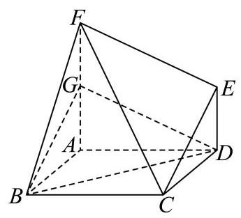
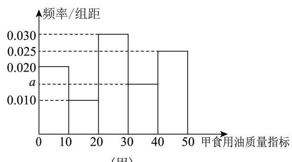
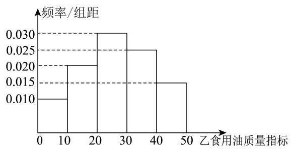
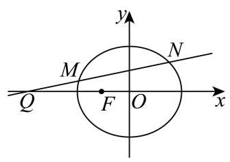

填空题
按本区原卷题号顺序排列。
松江 · 第1题 ★☆☆☆☆ · 教师预估
已知集合 A={x∣x⟩0},B={−1,0,1,2} ，则 A∩B 等于___.
松江 · 第2题 ★☆☆☆☆ · 教师预估
不等式 ∣3−x∣<1 的解集为___.
松江 · 第3题 ★☆☆☆☆ · 教师预估
已知复数 z 满足 (1+i)⋅z=1−i (其中 i 为虚数单位), 则 z⋅zˉ= ___.
松江 · 第4题 ★★☆☆☆ · 教师预估
已知抛物线 y2=2px(p>0) 的准线恰好平分圆 (x+2)2+(y+1)2=1 的周长，则该抛物线的焦点坐标为___.
松江 · 第5题 ★★☆☆☆ · 教师预估
若 a 、 b 都是单位向量， a⋅b=0 ，则向量 b 与 a−b 的夹角大小为___.
松江 · 第6题 ★★☆☆☆ · 教师预估
已知等比数列 {an} 的前 n 项和为 Sn ，且 a2=3,a5=81 . 若 Sn=40 ，则 n= ___.
松江 · 第7题 ★★☆☆☆ · 教师预估
已知函数 f(x)={3x−a,x≥0b−(31)x,x<0 为奇函数，则 a+b 的值为___.
松江 · 第8题 ★★☆☆☆ · 教师预估
若 (3−2x)6=a0+a1x+a2x2+⋯+a6x6 ，则 a1+2a2+3a3+⋯+6a6= ___.
松江 · 第9题 ★★★☆☆ · 教师预估
已知函数 y=loga(x+2)+1(a>0 且 a=1) 的图像过定点 (s,t) ，正实数 m 、 n 满足 nt−ms=1 ，则 m1+n3 的最小值为___.
松江 · 第10题 ★★★☆☆ · 教师预估
在四棱柱 ABCD−A1B1C1D1 中，底面 ABCD 为平行四边形， AA1=2 ，异面直线 AA1 与 BD 的夹角为 arccos52,AD⋅DC1−AB⋅BC1=4 ，则 BD1= ___.
松江 · 第11题 ★★★☆☆ · 教师预估
如图,某公园划出一块平整的三角形草地 ABC ,在边 BC 上设置一个观景点 D ,点 D 到顶点 C 的距离为 2 百米, AD 平分 ∠BAC ,边 AB 和 AD 的长度都为 3 百米. 现需要沿着三角形草地 ABC 的边安装一圈灯带，则该灯带的长度为___百米.

松江 · 第12题 ★★★★★ · 教师预估
记号 max{a,b} 表示 a 、 b 中取较大的数,如 max{1,2}=2 . 在平面直角坐标系中,定义 d(A,B)=max{∣x1−x2∣,∣y1−y2∣} 为两点 A(x1,y1) 、 B(x2,y2) 的 “切比雪夫距离”. 已知点 O 为坐标原点,点 C 在圆 (x−1)2+(y−1)2=1 上,点 A 在直线 3x+4y−10=0 上, 则 d(C,A)+d(C,O) 的最小值为___.
选择题
按本区原卷题号顺序排列。
松江 · 第13题 ★☆☆☆☆ · 教师预估
若实数 a 、 b 满足 a2>b2 ，则下列不等式恒成立的是( )
A. a>b>0
B. a>0>b
C. a>∣b∣
D. ∣a∣>∣b∣
松江 · 第14题 ★★☆☆☆ · 教师预估
一个袋中有大小与质地完全相同的红、黄、蓝三个球, 从袋中依次随机不放回地摸出两个球，记“第一次取到红球”为事件 A ，“第二次取到黄球”为事件 B ，则( )
A. A,B 相互独立
B. P(B)=21
C. P(A∣B)=21
D. P(Aˉ)=21
松江 · 第15题 ★★★★☆ · 教师预估
在平面直角坐标系中,如果将函数 y=f(x) 的图象绕坐标原点逆时针旋转 a 弧度后, 所得曲线仍然是某个函数的图象,那么称函数 y=f(x) 为 “ a 旋转函数”. 若函数 y=ax−x1 为 “ 4π 旋转函数”，则 a 的值为( )
A. -1
B. 0
C. 1
D. 2
松江 · 第16题 ★★★★☆ · 教师预估
已知数列 {an} 满足 an+1=2an2−1(n 为正整数 ) ,关于数列 {an} 有以下两个命题: ①若 1<a3<817 ,则 a1 的取值范围是 (1,432) ; ②若 a1+a3=0 ,则 a1 的所有可能取值的个数是 4 个. 则以下选项正确的是 ( )
A. ①是真命题，②是假命题
B. ①是假命题，②是真命题
C. 两个都是真命题
D. 两个都是假命题
解答题
按本区原卷题号顺序排列。
松江 · 第17题 ★★★☆☆ · 教师预估
本题资料或解析有待核事项，预览不可作为已审定成品。
在如图所示的多面体中,已知四边形 ABCD 是菱形, ∠ABC=60∘,FA⊥ 平面 ABCD,ED⊥ 平面 ABCD,AB=FA=2ED=2 ，点 G 为线段 AF 的中点.

(1)求证:平面 BDG// 平面 CEF ；
(2)求直线 BC 与平面 BDG 所成角的正弦值.
松江 · 第18题 ★★★★☆ · 教师预估
已知函数 y=f(x) 的表达式为 f(x)=23sin2x+cos2x .
(1)若将函数 y=f(x) 的图像向右平移 φ(φ>0) 个单位长度，得到函数 y=g(x) 的图像关于直线 x=6π 对称,求 φ 的最小值;
( 2 )若函数 y=f(x) 在区间 (−12π,m) 上恰有 2 个极值点和 2 个零点，求实数 m 的取值范围.
松江 · 第19题 ★★★☆☆ · 教师预估
本题资料或解析有待核事项，预览不可作为已审定成品。
质监部门从某超市销售的甲、乙两种食用油中各随机抽取 100 桶检测某项质量指标, 由检测结果得到如下的频率分布直方图:
(甲)


(乙)
(1)写出频率分布直方图(甲)中网的值；记甲、乙两种食用油 100 桶样本的质量指标的方差分别为 S 甲 2 、 S 乙 2 ，试比较 S 甲 2 与 S 乙 2 的大小(只要求写出结果)；
(2)在甲、乙两种食用油中各随机抽取 1 桶，用频率估计概率，求恰有 1 桶的质量指标大于 10 且小于 40 的概率;
(3)由频率分布直方图可以认为，乙种食用油的质量指标值 Z 服从正态分布 N(μ,σ2) . 其
中 μ 近似为样本平均数 xˉ,σ2 近似为样本方差 s2 ,现从乙种食用油中随机抽取 10 桶,设 X 表示质量指标值位于 (26.50,38.45) 的桶数,求 X 的数学期望. (结果保留两位小数)
注: ①同一组数据用该区间的中点值作代表; ②若 Z∼N(μ,σ2) ,则
P(μ−σ<Z<μ+σ)=0.6826,P(μ−2σ<Z<μ+2σ)=0.9545
松江 · 第20题 ★★★★★ · 教师预估
已知椭圆 Γ:a2x2+3y2=1(a>0) 的左焦点为 F(−1,0) ,过点 Q(−4,0) 作斜率不为 0 的直线 l 与椭圆 Γ 交于 M,N 两点.

(1)求椭圆下的离心率；
(2)设直线 MF 、 NF 的斜率分别为 k1,k2 ，求 k1+k2 的值；
(3)若点 E 满足 ∣EM∣=∣EN∣=∣EF∣ ，点 D 在椭圆上， MD⊥x 轴，探究直线 EF 与直线 DQ 的斜率之积是否为定值？若为定值，请求出该值；若不为定值，请说明理由.
松江 · 第21题 ★★★★★ · 教师预估
本题资料或解析有待核事项，预览不可作为已审定成品。
若函数 y=M(x) 、 y=N(x) 在区间 I 上满足 ∣M(x)∣≤N(x) ,则称函数 y=N(x) 为 y=M(x) 在区间 I 上的绝对值上界函数. 设定义在 R 上的函数 y=f(x) 、 y=g(x) 的导数为 y=f′(x) 、 y=g′(x) .
(1)判断函数 y=x 是不是函数 y=sinx 在区间 [0,π] 上的绝对值上界函数，并说明理由;
(2)若函数 y=g′(x) 为 y=f′(x) 在 R 上的绝对值上界函数，求证:对任意 h>0 ，都有 ∣f(x+h)−f(x)∣≤g(x+h)−g(x);
(3)若函数 y=g′(x) 为 y=f′(x) 在 R 上的绝对值上界函数，实数 a,b(a<b) 满足 g(x)min=g(a)=f(a),g(x)max=g(b)=f(b) ,确定 f(x0),g(x0) 在 x0∈R 时的大小关系 (g(x)min 、 g(x)max 分别表示函数 y=g(x) 的最小值和最大值)